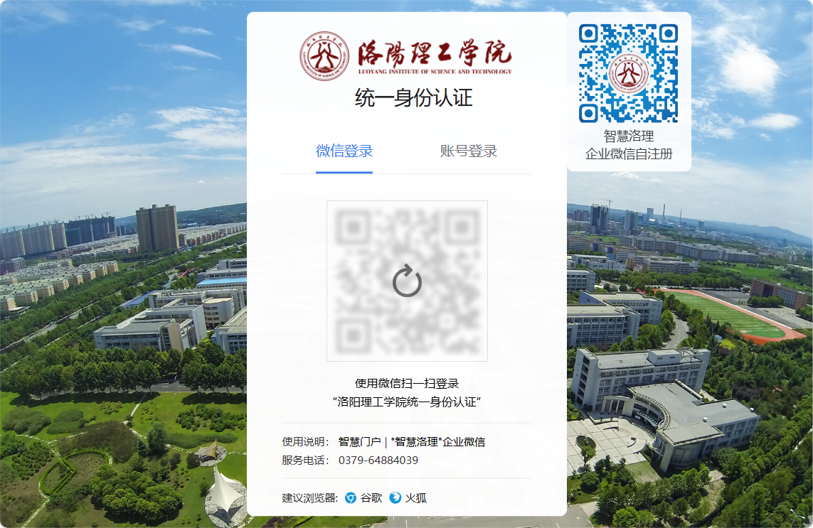
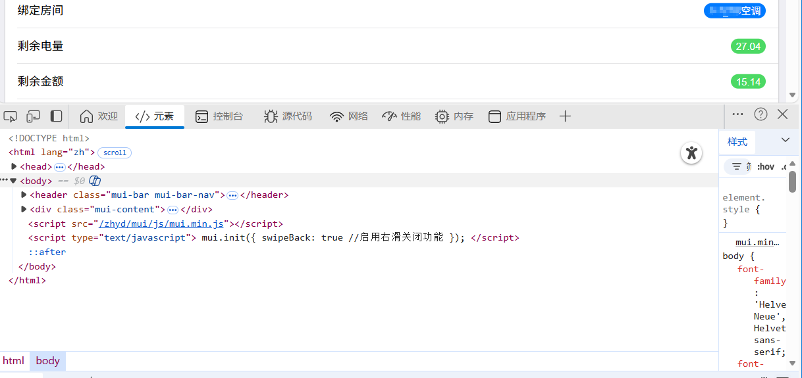
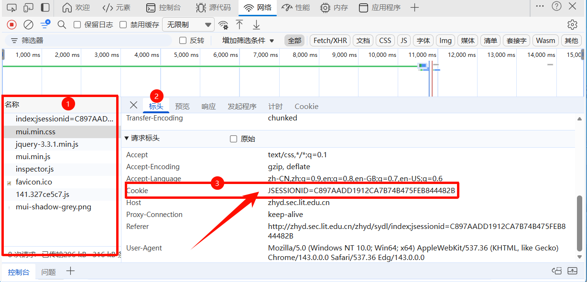
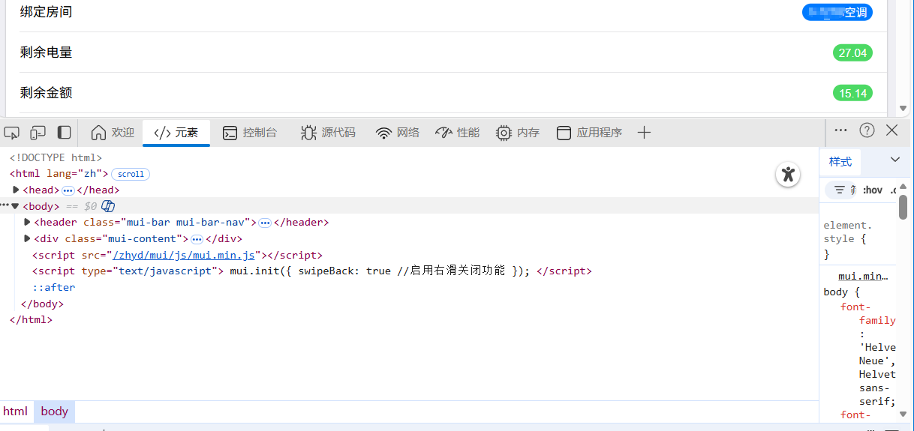
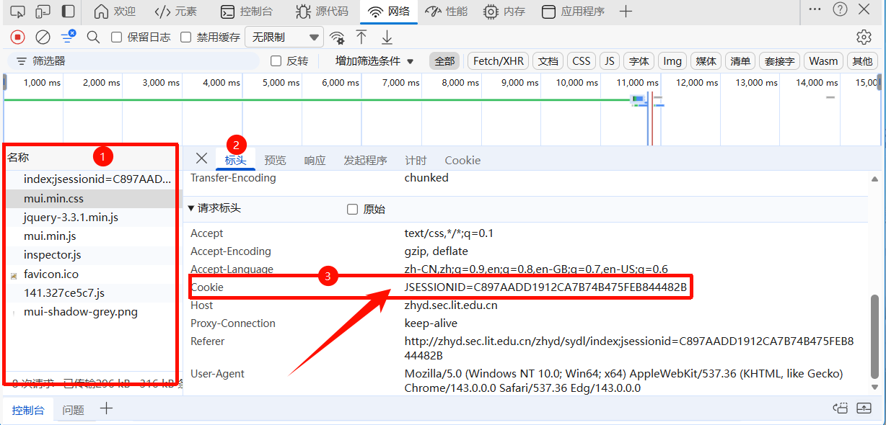

项目简�?
宿舍电费监控系统是一个自动化监控工具,定期检测校园宿舍剩余电量并在电量不足时发送邮件提醒�? 系统采用Docker容器化部�?支持多房间监�?提供友好的Web管理界面�?
适用场景: 适合需要实时掌握宿舍电费状态的学生,避免突然断电影响学习生活�?
功能特�?
自动化监�?
定时自动检测电�?无需手动操作
邮件提醒
低电量时自动发送邮件通知
响应式界�?
支持手机/平板/电脑访问
Docker部署
支持Docker容器化部署，简化安装维�?/p>
快速开�?
1登录系统
有两种方式登�?
- 扫码登录(推荐): 点击"扫码登录"按钮,使用微信扫描二维�?/li>
- 手动输入: 点击"手动输入"按钮,粘贴从浏览器获取的Cookie
2配置参数
进入"配置"页面,设置以下参数:
- 检测间�?/strong>: 建议900�?15分钟)
- 低电量阈�?/strong>: 建议15�?/li>
- 邮件收件�?/strong>: 填写接收通知的邮箱地址
3测试邮件
点击"发送测试邮�?按钮,确认邮件配置正常。如果收到测试邮�?说明系统配置成功�?
Cookie获取教程
重要提示: 请勿将Cookie分享给他人，这是你的登录凭证!
电脑�?
方法1: 提取链接后缀 (推荐)
-
使用浏览器访�?统一身份认证 进行登录�?/p> 
-
成功登录后的界面如下�?/p>

-
复制地址栏中�?
JSESSIONID=xxxxxxxxx部分�?/p>
方法2: 使用开发者工�?/h4>
- 参考方法一进行登录�?/li>
-
�?F12 打开开发者工具�?/p>

-
切换�?Network (网络) 选项卡�?/p>

- 刷新页面 (F5)�?/li>
-
点击任意请求，在右侧找到 Request Headers (请求�?，找�?Cookie: 字段，复制其中的 JSESSIONID=xxxxxxxxx 部分�?/p>

�?F12 打开开发者工具�?/p> 
切换�?Network (网络) 选项卡�?/p>
点击任意请求，在右侧找到 Request Headers (请求�?，找�?Cookie: 字段，复制其中的 JSESSIONID=xxxxxxxxx 部分�?/p>

手机�?
建议使用 电脑端的方法一 获取，因为手机端浏览器通常无法方便地使用开发者工具查�?Cookie�?
格式说明: Cookie 格式�?JSESSIONID=一串字母数�?/code>�? 如果只复制了后面的值，系统会自动补全前缀�?
配置说明
| 配置�?/th> | 说明 | 推荐�?/th> |
|---|---|---|
| 检测间�?/td> | 每次检测的时间间隔(�? | 900(15分钟) |
| 低电量阈�?/td> | 低于此值发送邮�?�? | 15�?/td> |
| 邮件收件�?/td> | 接收通知的邮�?多个用逗号分隔 | user@qq.com |
| 服务器IP | 用于生成邮件中的扫码链接 | 192.168.1.xxx |
常见问题
Q: Cookie多久会失�?
A: 通常几天到一�?失效后系统会发邮件提�?重新扫码即可�?/p>
Q: 为什么没收到邮件通知?
A: 请检�?
- 收件人邮箱是否正�?/li>
- 检查垃圾邮件箱
- 点击"发送测试邮�?验证配置
Q: 可以监控多个房间�?
A: 可以!如果你的账号绑定了多个房�?系统会自动显示所有房间的电量�?/p>
Q: 手动输入Cookie后没反应?
A: Cookie保存后需要等待下次检测周�?最�?5分钟)才会生效,请耐心等待�?/p>
Q: 显示"Cookie已失�?怎么�?
A: 点击"扫码登录"�?手动输入"重新设置Cookie即可�?/p>
技术栈
Python 3.9
Flask
Docker
Selenium
Alpine.js
Tailwind CSS
需要帮�?
如果遇到问题,可以查看日志或重启容�?/p>
# 查看日志
docker logs -f dorm_monitor
# 重启容器
docker-compose restart